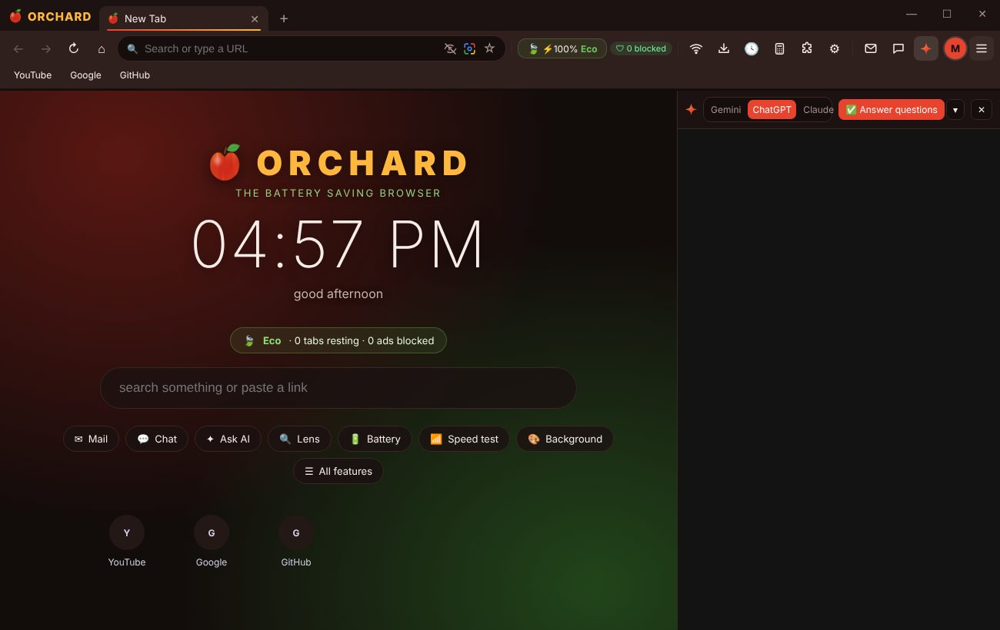
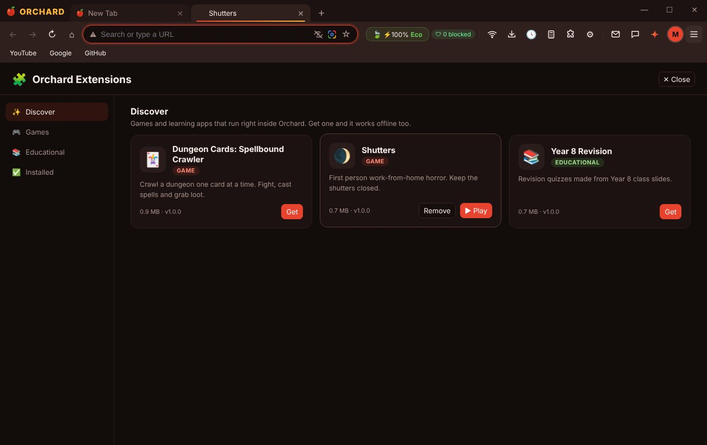
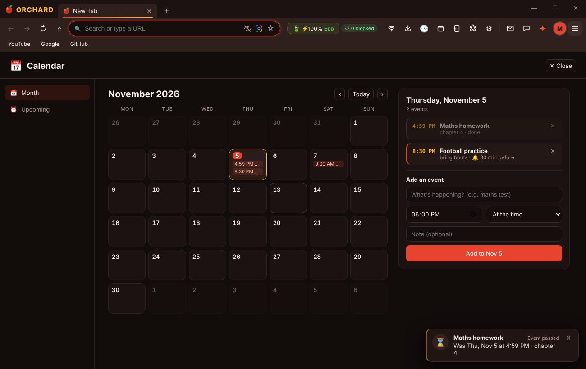

The browser that saves your battery.
Orchard puts tabs u aren't using to sleep, blocks ads before they load, and goes into Ultra saver by itself when ur battery gets low. Chat, mail, a calendar and games come built in.

Three battery modes, switched for u.
Plugged in, Orchard runs in Eco. Unplug and it moves to Saver. Drop under 20% and Ultra kicks in. U can also pick a mode urself.
- Tabs freeze after
- 15 seconds
- Tabs sleep after
- 5 minutes
- Ads
- blocked
- Tabs freeze after
- 3 seconds
- Tabs sleep after
- 2 minutes
- Videos
- never autoplay
- Animations
- calmed down
- Background tabs
- asleep right away
- Tabs freeze after
- 1 second
- Pages
- go dark (OLED)
Everything u'd install an extension for.
Ask AI
Gemini, ChatGPT or Claude beside any page. One click to answer the questions on it.
Orchard Chat
Message friends by email, make groups, send pics and files. Pop up notifications.
Orchard Mail
Ur Gmail in a side panel, signed in with Google's official login.
Calendar
Add events to any day and get pinged when it's time.
Split screen
Up to 4 tabs side by side. Drag tabs out to make new windows.
Hide anything
Click ads, popups or sidebars on a site and they stay gone.
Google Lens
Drag over anything on a page to search it.
Calculator
Normal or scientific, right in the toolbar.
Profiles
Separate logins, bookmarks and history for school and personal.


Two minutes, then it updates itself.
Download the installer
OrchardSetup.exe is 7 MB. It grabs the rest (about 150 MB) while it installs.
Run it
If Windows says "Windows protected your PC", click More info, then Run anyway. Small apps without a paid certificate get that.
That's it
Orchard opens and puts itself in the Start menu and on ur desktop. New versions arrive on their own.
On a Mac?
Download Download for Mac, double-click the zip to unzip it, then right-click Install Orchard and choose Open (a plain double-click gets blocked the first time). It builds Orchard, signs it for ur Mac and drops it in Applications. Works on Apple Silicon and Intel, macOS 13 or newer.
Mac says "can't be opened" or "unidentified developer"?
That's macOS being careful about apps without a paid Apple certificate. Right-click Install Orchard and pick Open instead of double-clicking. If it ever asks to install "command line developer tools", click Install and run it again.
Is it safe?
The installer downloads the Chromium engine straight from Electron's official GitHub and Orchard's files from this repo, and checks every file against its SHA-256 before installing. Everything is open in the repo.
Can I sign in to Google?
Google blocks sign in on custom browsers. Orchard Mail uses Google's official app login so u can still read Gmail, and any tab can be opened in Chrome from its right click menu.
How do I uninstall?
Windows Settings, Apps, Orchard, Uninstall. Ur bookmarks and settings stay in %APPDATA%\Orchard in case u come back.